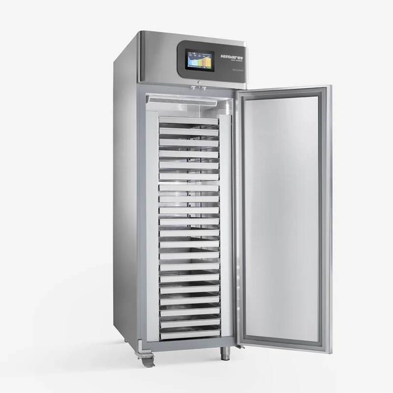
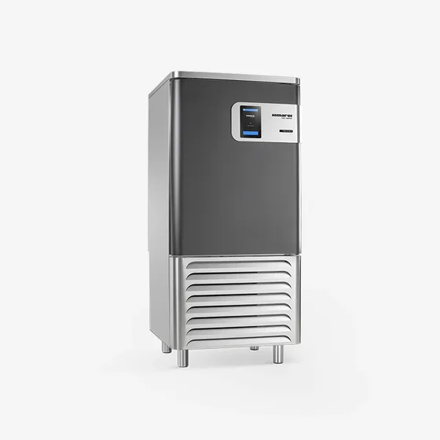
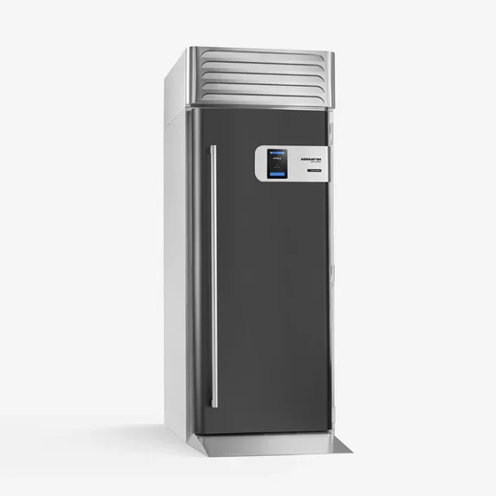
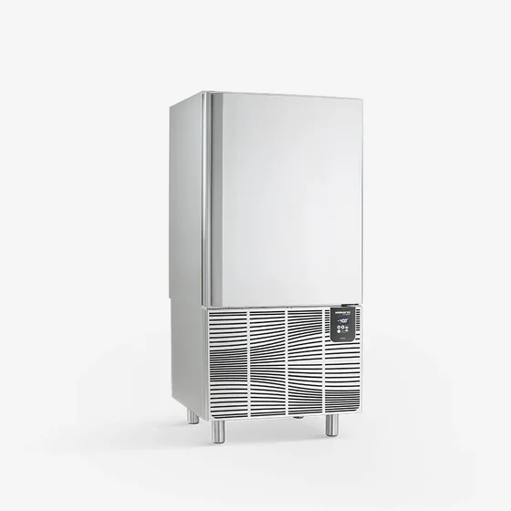
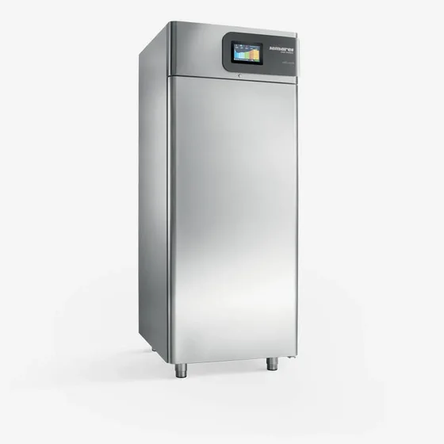
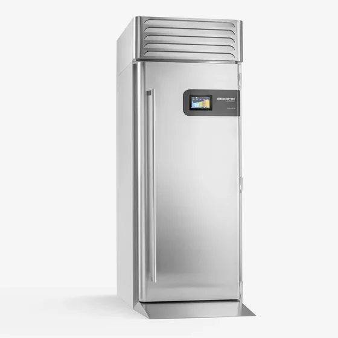

Abatidores-Ultracongeladores
TalentTA 6T P BK
Para el obrador que necesita enfriar o ultracongelar una elaboración por lotes.
Datos técnicos
- Rendimiento de +90 °C a +3 °C
- 30 kg
- Rendimiento de +90 °C a −18 °C
- 25 kg
- Volumen bruto
- 159 l
Pastelería y panadería
Elige según el trabajo de tu turno: enfriar una tanda, programar la fermentación o conservar los ingredientes en la mesa de preparación.
Abatidores-Ultracongeladores
Para el obrador que necesita enfriar o ultracongelar una elaboración por lotes.

Armarios retardadores de la fermentación
Para panaderías que necesitan programar la fermentación de sus masas.

Mesas refrigeradas
Para un puesto de preparación que necesita conservar los ingredientes cerca de la superficie de trabajo.
Samaref / Catálogo
Explora las nueve líneas de pastelería y panadería. Cada fotografía abre su familia en el catálogo de Samaref.
Abrir el catálogo en español ↗
TalentAbatidores-Ultracongeladores
Talent Roll-InAbatidores-Ultracongeladores
PolarAbatidores-Ultracongeladores
EvolutionArmarios retardadores de la fermentación
Evolution Roll-InArmarios retardadores de la fermentación ChocolateArmarios refrigerados
ChocolateArmarios refrigerados
 DeliziaArmarios refrigerados
DeliziaArmarios refrigerados
 EliteArmarios refrigerados
EliteArmarios refrigerados
 DynamicMesas refrigeradas
DynamicMesas refrigeradas
Vídeo, fotografías y documentación de Samaref. Ver la presentación original · Canal oficial
Podrás revisar el mensaje en WhatsApp antes de enviarlo.